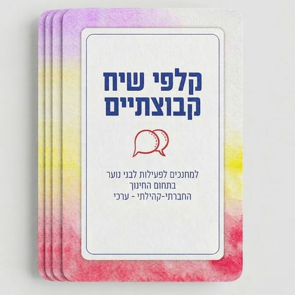

קלפי שיח
הגשר לעולמם של ילדים ומתבגרים. כלי מקצועי, ערכי ומהנה שמאפשר שיח פתוח וכנה
כמי שמוביל את תחום החינוך החברתי-ערכי בציבור החרדי, הקמתי את "שיח" מתוך שליחות והבנה שהחיבור בין בני משפחה, חברים וקהילה הוא הבסיס לחוסן הנפשי והרוחני שלנו.
כל סט קלפים נבנה מתוך מחשבה מעמיקה על השפה, הערכים והוויזואליה שמתאימים בדיוק לציבור שלנו.


